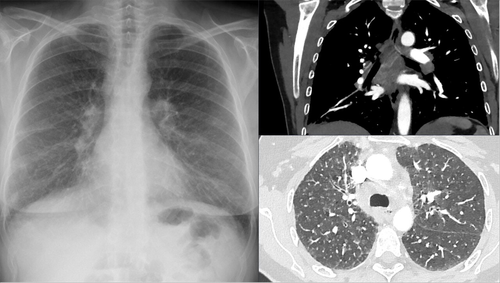

Ficha del catálogo
Sarcoidosis torácica
- Sistema
- Respiratorio
- Modalidad
- TC
- Región
- Tórax
- Dificultad
- Avanzado
Enfermedad granulomatosa sistémica de causa desconocida que afecta al tórax en la gran mayoría de los casos. Se manifiesta con adenopatías hiliares y mediastínicas y con afectación intersticial de distribución perilinfática. Puede ser asintomática y descubrirse en una radiografía de rutina o evolucionar a fibrosis.
Técnica
Tomografía de alta resolución sin contraste para el parénquima, complementada con estudio con contraste para valorar adenopatías mediastínicas.
Qué observar
- Adenopatías hiliares bilaterales y simétricas con adenopatías mediastínicas
- Micronódulos de distribución perilinfática siguiendo cisuras y haces broncovasculares
- Nódulos subpleurales alineados a lo largo de las cisuras
- Predominio en campos pulmonares superiores y medios
- Calcificación de adenopatías en cáscara de huevo en fases crónicas
- Distorsión arquitectural y masas conglomeradas perihiliares en la fase fibrótica
Hallazgos
Adenopatías hiliares bilaterales simétricas con micronodulillos perilinfáticos de predominio en lóbulos superiores, con o sin fibrosis perihiliar.
Perlas
La distribución perilinfática, con nódulos que siguen cisuras, septos y haces broncovasculares, es la firma de la sarcoidosis. Junto con las adenopatías hiliares bilaterales simétricas hace el diagnóstico muy probable en el contexto clínico adecuado.
Diagnóstico diferencial
- Linfangitis carcinomatosa
- Engrosamiento septal nodular unilateral o asimétrico con tumor conocido.
- Tuberculosis ganglionar
- Adenopatías con centro necrótico y realce periférico, habitualmente asimétricas.
- Silicosis
- Nódulos de predominio posterior superior con antecedente de exposición al polvo.
Simuladores
- Linfoma mediastínico
- Neumoconiosis
- Reacción ganglionar reactiva
Por modalidad
- RX
- Permite el estadiaje clásico según adenopatías y afectación parenquimatosa
- TC
- Define la distribución de los nódulos y detecta fibrosis
Protocolo
Alta resolución sin contraste con cortes finos y estudio mediastínico con contraste si se necesita caracterizar las adenopatías.
Clasificación
El estadiaje radiográfico clásico va desde adenopatías aisladas, pasando por adenopatías con afectación parenquimatosa y afectación parenquimatosa sin adenopatías, hasta la fibrosis establecida.
Errores frecuentes
- Confundir la distribución perilinfática con la centrolobulillar
- Asumir linfoma ante adenopatías bilaterales sin valorar la simetría
- No reconocer la fase fibrótica y atribuirla a otra enfermedad intersticial

sarcoidosis perilinfatico adenopatias hiliares granulomatosa cascara de huevo fibrosis